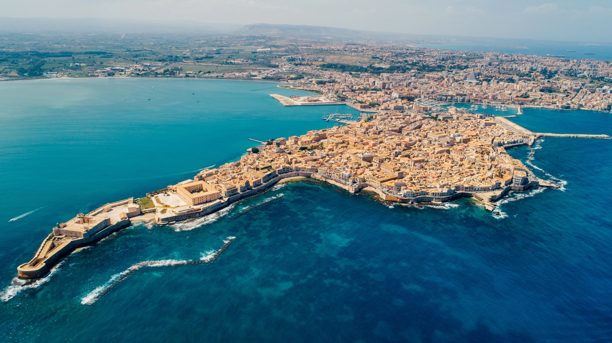

Messina


Siracusa è una delle città più antiche del Mediterraneo, fondata dai Greci nel 734 a.C. La sua isola di Ortigia, cuore storico della città, è un concentrato di storia millenaria dove convivono architettura greca, romana, normanna e barocca.
Piazza Duomo di Ortigia è considerata una delle piazze più belle d'Italia. Racchiusa da palazzi barocchi e dominata dalla straordinaria Cattedrale, è uno spazio scenografico dove ogni pietra racconta tremila anni di storia senza soluzione di continuità.

Un edificio unico al mondo, costruito letteralmente inglobando le imponenti colonne doriche dell'antico Tempio di Atena. La sua magnifica facciata barocca nasconde un interno che attraversa millenni di storia.
Piazza Duomo, 5, 96100 Siracusa SR
Un percorso sotterraneo che si snoda sotto la piazza principale di Ortigia. Nato come cava di pietra e utilizzato come rifugio antiaereo durante la Seconda Guerra Mondiale, offre un suggestivo viaggio nel sottosuolo.
Piazza Duomo, 96100 Siracusa SR


Sede del municipio di Siracusa, è uno splendido palazzo seicentesco a pianta quadrata. L'edificio, che si affaccia su Piazza Duomo, ospita al piano terra anche i resti di un antico tempio ionico.
Piazza Duomo, 4, 96100 Siracusa SR
Un raffinato locale incastonato nella scenografia barocca di Piazza Duomo. Propone un'esperienza gastronomica di alto livello, reinterpretando i sapori della tradizione siciliana con tecniche moderne e materie prime d'eccellenza.
Piazza Duomo, 6, 96100 Siracusa SR


Un elegante bar storico con tavolini all'aperto. È il punto di osservazione perfetto per fare colazione o godersi un aperitivo ammirando i dettagli architettonici della piazza e il viavai di Ortigia.
Piazza Duomo, 18/19, 96100 Siracusa SR
Un suggestivo specchio d'acqua dolce che sgorga a pochi metri dal mare, celebre per il mito della ninfa Aretusa. È uno dei pochissimi luoghi in Europa dove crescono spontaneamente le piante di papiro.
Largo Aretusa, 96100 Siracusa SR


Uno spazio magico dove prende vita la secolare tradizione dell'Opera dei Pupi siciliana, dichiarata Patrimonio dell'Umanità. Gli spettacoli mettono in scena le epiche gesta di Carlo Magno e dei suoi paladini.
Via della Giudecca, 22, 96100 Siracusa SR